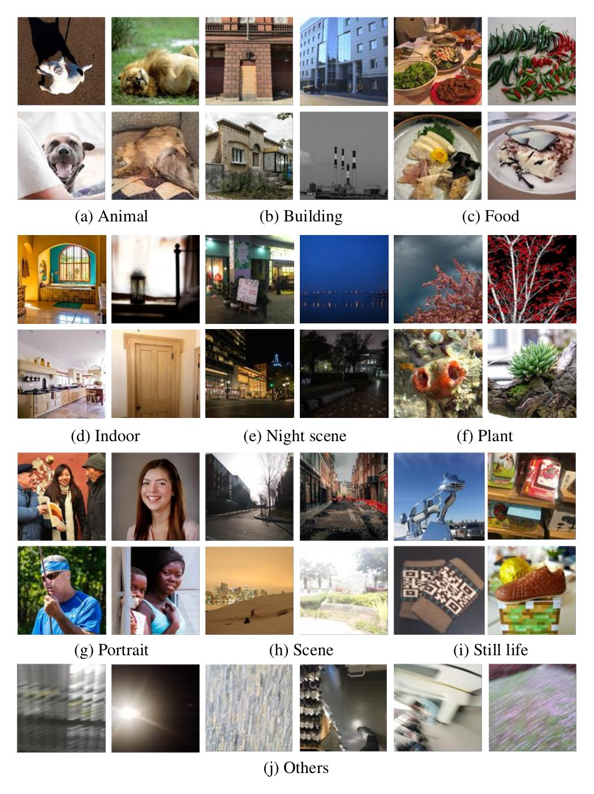
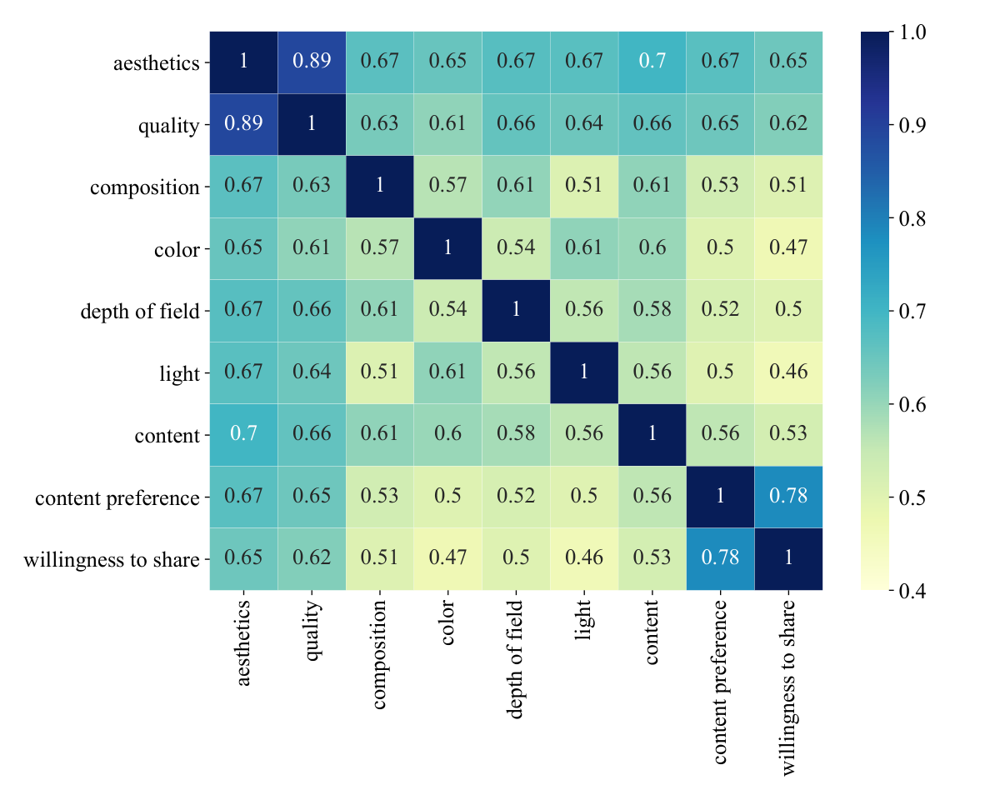
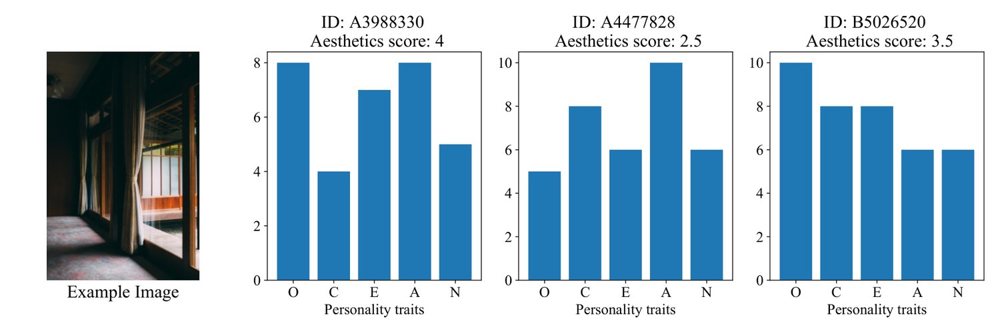
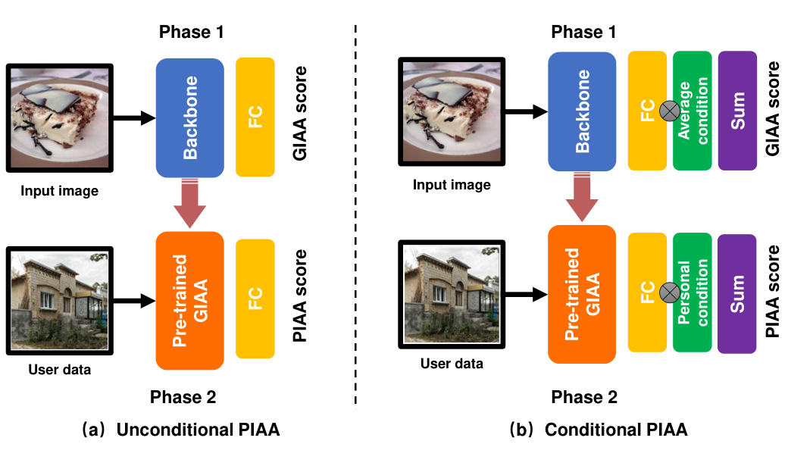

Personalized Image Aesthetics Assessment with Rich Attributes
Personalized image aesthetics assessment (PIAA) is challenging due to its highly subjective nature. People’s aesthetic tastes depend on diversified factors, including image characteristics and subject characters. The existing PIAA databases are limited in terms of annotation diversity, especially the subject aspect, which can no longer meet the increasing demands of PIAA research. To solve the dilemma, we conduct so far, the most comprehensive subjective study of personalized image aesthetics and introduce a new Personalized image Aesthetics database with Rich Attributes (PARA), which consists of 31,220 images with annotations by 438 subjects. PARA features wealthy annotations, including 9 image-oriented objective attributes and 4 human-oriented subjective attributes. In addition, desensitized subject information, such as personality traits, is also provided to support study of PIAA and user portraits. A comprehensive analysis of the annotation data is provided and statistic study indicates that the aesthetic preferences can be mirrored by proposed subjective attributes. We also propose a conditional PIAA model by utilizing subject information as conditional prior. Experimental results indicate that the conditional PIAA model can outperform the control group, which is also the first attempt to demonstrate how image aesthetics and subject characters interact to produce the intricate personalized tastes on image aesthetics. We believe the database and the associated analysis would be useful for conducting next-generation PIAA study. The project page of PARA can be found at: https://cv-datasets.institutecv.com/#/data-sets .

图 1：PARA 中的示例图像。
Image aesthetics assessment (IAA) aims at evaluating photo aesthetics computationally. Due to the highly differentiated aesthetic preference, image aesthetics assessment can be divided into two categories: generic and personalized image aesthetics assessment (a.k.a GIAA and PIAA) [13]. For GIAA, an image is annotated by different voters and mean opinion score (MOS) is used as the aesthetics “ground truth”. However, GIAA merely reflects an “average opinion”, which neglects the highly subjective nature of aesthetic tastes. To mitigate this issue, PIAA was proposed to capture unique aesthetic preferences [13]. In the past decade, PIAA has achieved encouraging advances. Initially, Ren et al. [13] proposed the first PIAA database named FLICKR-AES and they addressed this problem by leveraging GIAA knowledge on user-related data, so that model can capture aesthetic “offset”. Later, research work attempted to learn PIAA from various perspectives, such as multi-modal collaborative learning [17], meta-learning [21], multi-task learning [7], deep reinforcement learning [10] etc. High quality databases are essential for building data-driven PIAA models. However, current databases, such as FLICKR-AES [13] and AADB [6], are limited in annotation diversity. For comparison, we summarize the annotation information of three related databases in Table 1 and it is easy to observe that most databases are limited in annotation diversity.
图像美学评估（IAA）旨在以计算方式评价照片的美感。由于美学偏好差异显著，图像美学评估可分为通用图像美学评估与个性化图像美学评估两类（分别简称 GIAA 与 PIAA）[13]。在 GIAA 中，一幅图像由不同投票者标注，并以平均意见分数（MOS）作为美学的“真值”。然而 GIAA 只反映一种“平均意见”，忽略了美学品味高度主观的本质。为缓解这一问题，PIAA 被提出以捕捉个体独特的美学偏好 [13]。过去十年间，PIAA 取得了令人鼓舞的进展。最初，Ren 等人 [13] 提出首个 PIAA 数据库 FLICKR-AES，通过把 GIAA 知识迁移到与用户相关的数据上来处理该问题，使模型得以捕捉美学“偏移”。此后，研究者尝试从多模态协同学习 [17]、元学习 [21]、多任务学习 [7]、深度强化学习 [10] 等多个角度学习 PIAA。高质量的数据库是构建数据驱动 PIAA 模型的基础，然而现有数据库（如 FLICKR-AES [13] 与 AADB [6]）在标注多样性上受限。为便于比较，我们在表 1 中汇总了三个相关数据库的标注信息，不难看出多数数据库的标注多样性不足。
| Database | Subjective label | Objective label | Annotation count | Avg. annotation times per image | Num. of images | Num. of annotation dimension | Num. of subject |
| AADB [6] | ✓ | 600 k | 5 | 10,000 | 12 | 190 | |
| REAL CUR [13] | ✓ | 2.87 k | 1 | 2,870 | 1 | 14 | |
| FLICKR-AES [13] | ✓ | 200 k | 5 | 40,000 | 1 | 210 | |
| Ours (PARA) | ✓ | ✓ | 9723 k | 25.87 | 31,220 | 13 | 438 |
表 1：PIAA 数据库对比。注意，“标注量”由图像数量、每幅图像的平均标注次数与标注维度数量相乘得到。由于场景标签在标注开始前已分配给每幅图像，我们将场景标签的数量单独列出。
| Objective label | # Subjective label | ||
| Session ID | session1 | User ID | A3c6418 |
| Image name | iaa_pub1_.jpg | Age | 30 |
| User ID | A3c6418 | Gender | male |
| Aesthetics | 3.0 | Education experience | University |
| Quality | 3.1 | Artistic experience | proficient |
| Composition | 3 | Photographic experience | proficient |
| Color | 4 | E | 5 |
| Depth of Field | 3 | A | 9 |
| Content | 3 | N | 4 |
| Light | 4 | O | 7 |
| object emphasis | 0 (False) | C | 9 |
| Scene categories | animal | Emotion | Neutral |
| Difficulty of judgement | -1 (Easy) | ||
| Content preference | 3 (Neutral) | ||
| Willingness to share | 3 (Neutral) | ||
表 2：单幅图像的标注信息。标注分为客观信息与主观信息两组，主观标注与客观标注可通过用户 ID 关联。
To mitigate this issue, we notice that attributes usually provide a richer description to explicitly characterize differentiation [6]. Therefore, beyond aesthetics score, we provide quantitative personalized aesthetics attributes annotations to facilitate more accurate aesthetic preference modeling. Here, considering the highly subjective nature of PIAA task, different from the existing databases FLICKR-AES [13] and AADB [6], we design the label system of PARA from two perspectives, which are human-oriented and image-oriented annotations. Specifically, apart from image aesthetics attributes, we also collect subjective annotations, including 1) content preference, 2) difficulty of judgment, 3) emotion, 4) willingness to share. We believe the aforementioned dimensions can bring further research opportunities in understanding correlation between PIAA and psychological feelings. In addition, we also provide desensitized subject information (user ID, age, gender, education, personality trait, photographic experience, art experience) for more in-depth analysis in the future. Annotation dimensions of single image are demonstrated in Table 2.
为缓解该问题，我们注意到属性通常能提供更丰富的描述，从而显式刻画个体间的差异 [6]。因此，除美学分数外，我们还提供量化的个性化美学属性标注，以支持更精确的审美偏好建模。考虑到 PIAA 任务高度主观的特性，与已有数据库 FLICKR-AES [13] 和 AADB [6] 不同，我们从面向人与面向图像两个视角设计 PARA 的标注体系。具体地说，除图像美学属性外，我们还采集了主观标注，包括 1) 内容偏好、2) 判断难度、3) 情感、4) 分享意愿。我们认为上述维度能为理解 PIAA 与心理感受之间的关联带来新的研究机会。此外，我们还提供脱敏的被试信息（用户 ID、年龄、性别、受教育经历、人格特质、摄影经验、艺术经验），以支持未来的深入分析。单幅图像的标注维度见表 2。
In this paper, we build so far, the richest annotated personalized image aesthetic assessment database named “PARA”. In addition, we also conduct an in-depth analysis of annotation information and propose a benchmark for this database. Contributions of this work can be summarized as follows:
本文构建了迄今标注最丰富的个性化图像美学评估数据库“PARA”，并对标注信息作了细致分析，同时给出该数据库的基准。本文贡献可概括如下：
We conduct so far, the most comprehensive subjective study of personalized image aesthetics, and build a PIAA database with rich annotations. Specifically, we collected 31,220 images and each image is annotated by 25 subjects in average and 438 subjects in total. Each image is annotated with 4 human-oriented subjective attributes and 9 image-oriented objective attributes. To support in-depth analysis, we also provide desensitized subject information.
• 我们开展了迄今最全面的个性化图像美学主观研究，并构建了一个富标注的 PIAA 数据库。具体地，我们采集了 31,220 幅图像，每幅图像平均由 25 名被试标注，被试总数为 438。每幅图像标注 4 项面向人的主观属性与 9 项面向图像的客观属性。为支持深入分析，我们还提供了脱敏的被试信息。
We provide an in-depth analysis to discover characteristics of annotations dimensions. Statistical results indicate that the personalized aesthetic preference can be mirrored by the proposed human-oriented subjective attributes, including personality traits, difficulty of judgement and image emotion, which in turn enlightens novel research angles, such as modeling personalized aesthetic by utilizing subject information.
• 我们提供了细致的分析以揭示各标注维度的特性。统计结果表明，个性化美学偏好可由所提出的面向人的主观属性（人格特质、判断难度与图像情感）加以反映，这反过来启发了新的研究角度，例如利用被试信息建模个性化美学。
We conduct a benchmark study based on the proposed PARA database. The benchmark contains two models, including unconditional and conditional PIAA. By utilizing subject information as a condition when modeling aesthetic preference, we prove that training with human-oriented annotations can further improve the PIAA model performance.
• 我们在所提出的 PARA 数据库上开展了基准研究。该基准包含无条件与条件式两类模型。通过在建模美学偏好时把被试信息作为条件，我们证明引入面向人的标注能够进一步提升 PIAA 模型的性能。
图 2：PARA 中用户画像与各属性的统计饼图：(a) 年龄，(b) 性别，(c) 受教育经历，(d) 艺术经验，(e) 摄影经验，(f) 大五人格特质，(g) 判断难度，(h) 情感分布，(i) 主体突出，(j) 场景类别。
For most data-driven machine learning systems, data with rich annotation plays a critical role. In PIAA research, three databases are frequently used, including FLICKR-AES [13], REAL-CUR [13] and AADB [6]. FLICKR-AES [13] is actually the first database specially designed for PIAA research. FLICKR-AES contains 40,000 images with a creative commons license from Flickr ** * https://www.flickr.com. It is annotated by 210 AMT †† † Amazon Mechanical Turk, https://www.mturk.com/ workers and the aesthetics score ranges from 1 to 5. Higher score indicates better visual aesthetics perception. However, rating scores in FLICKR-AES is provided by AMT workers, instead of the owner of image. To test PIAA algorithms in real-scene, REAL-CUR [13] was proposed and it is a small-scale database consists of 14 real personal albums. Each album contains different number of photos, ranging from 197 to 222, while the average is 205. In PIAA research, this database is usually served as a test set for algorithm verification only [13]. In addition to FLICKR-AES and REAL-CUR, another database that usually used in PIAA research is AADB [6]. It is initially designed to jointly learn image aesthetics and related attributes. Since subject ID is also provided, AADB can also be utilized to learn personalized aesthetic preferences. AADB contains 10,000 images rated by 190 workers in total and 5 workers in average. AADB provides 11 aesthetics attributes annotation (interesting content, object emphasis, good lighting, color harmony, vivid color, shallow depth of field, motion blur, rule of thirds, balancing element, repetition, and symmetry) and 1 aesthetics score that ranges from 1 to 5, indicating the overall aesthetics judgement.
对多数数据驱动的机器学习系统而言，富标注数据起着关键作用。PIAA 研究中常使用三个数据库：FLICKR-AES [13]、REAL-CUR [13] 与 AADB [6]。FLICKR-AES [13] 实为首个专为 PIAA 研究设计的数据库，包含从 Flickr** * https://www.flickr.com 获取的 40,000 幅知识共享许可图像，由 210 名 AMT†† † Amazon Mechanical Turk, https://www.mturk.com/ 工作者标注，美学分数取值为 1 至 5，分数越高表示视觉美感越好。然而 FLICKR-AES 中的评分由 AMT 工作者给出，而非图像所有者本人。为在真实场景中检验 PIAA 算法，REAL-CUR [13] 被提出，它是一个由 14 个真实个人相册构成的小规模数据库；每个相册包含的照片数量从 197 到 222 不等，平均为 205。在 PIAA 研究中，该数据库通常只用作算法验证的测试集 [13]。除 FLICKR-AES 与 REAL-CUR 外，PIAA 研究中常用的另一个数据库是 AADB [6]，它最初被设计用于联合学习图像美学与相关属性；由于同时提供了被试 ID，AADB 也可用于学习个性化美学偏好。AADB 包含 10,000 幅图像，由总计 190 名工作者标注，平均每幅图像 5 名。AADB 提供 11 项美学属性标注（有趣的内容、主体突出、良好的光照、色彩和谐、色彩鲜明、浅景深、运动模糊、三分法、平衡元素、重复与对称）以及 1 个取值范围为 1 至 5 的美学分数，用以表示整体美学判断。
Different types of computational PIAA models have been derived by various deep learning techniques in the past decade. Ren et al. [13] proposed the first PIAA databases and they addressed the PIAA task by leveraging GIAA prior knowledge to personalized data to capture individual aesthetic preferences. Specifically, they first trained a GIAA model to provide fundamental task prior. Then, they finetune the GIAA knowledge with attributes and content features to learn a personalized aesthetic “offset” through residual learning. Wang et al. [17] pointed out that the current PIAA models contain insufficient user-specific information. Therefore, they enrich the current PIAA database by attaching textual reviews and conducting a user/image relation embedding for collaborative learning. Besides, they introduce an attentive mechanism to dig out image semantic and Region-of-Interest (ROI) via fusing multi-modal annotation information. Zhu et al. [7] proves that through multitask learning and cross-data training with personality information, performance of both GIAA and PIAA can outperform the other IAA algorithms. More recently, deep meta-learning [16] has been proved its effectiveness in capturing aesthetic preferences [18, 21]. In these works, each user’s annotation is regarded as a meta-task. Through the unique episodic training mechanism, the trained model can quickly adapt into new subject data. It is noteworthy that most algorithms mentioned above reflects the necessity and effectiveness of introducing extra information in the learning procedure, which in turn, indicates that extra data are required to design better PIAA models. These promote us to conduct this work and bring the next-generation PIAA.
过去十年间，各类深度学习技术催生了多种计算式 PIAA 模型。Ren 等人 [13] 提出了首个 PIAA 数据库，并利用 GIAA 先验知识处理个性化数据，以捕捉个体美学偏好。具体地，他们先训练一个 GIAA 模型提供基础任务先验，再用属性与内容特征对 GIAA 知识作微调，通过残差学习得到个性化的美学“偏移”。Wang 等人 [17] 指出，当时的 PIAA 模型所包含的用户特异性信息不足，因此他们通过补充文本评论、构建用户/图像关系嵌入进行协同学习来丰富现有 PIAA 数据库；此外，他们还引入注意力机制，通过融合多模态标注信息挖掘图像语义与兴趣区域（ROI）。Zhu 等人 [7] 证明，通过多任务学习以及结合人格信息的跨数据训练，GIAA 与 PIAA 的性能均可超过其他 IAA 算法。近年来，深度元学习 [16] 在捕捉美学偏好方面的有效性也得到验证 [18, 21]：这类工作把每位用户的标注视为一个元任务，借助独特的回合式训练机制，训练所得模型可快速适应新的被试数据。上述多数算法反映出在学习过程中引入额外信息的必要性与有效性，也就意味着设计更好的 PIAA 模型需要更多数据。这促使我们开展本工作，并带来下一代 PIAA。
The construction of PARA database contains four stages, including data collection, label system design, subject selection and subjective experiments.
PARA 数据库的构建包含四个阶段：数据采集、标注体系设计、被试遴选与主观实验。
We collect images from CC search ‡‡ ‡ https://search.creativecommons.org/ and filter images with ‘‘creative commons” license and ‘‘Flickr source” conditions. Then, we use a well-trained scene classification model to automatically predict scene labels on each image. Next, we double-checked the labels and revise the scene annotation manually to maintain annotation quality. Then, we sampled around 28,000 images based on scene label to maintain content diversity. We then add around 3,000 images with clear aesthetics ground truth from a website named Unsplash §§ § Unsplash, https://unsplash.com/ and image quality assessment databases, including SPAQ [1] and KonIQ-10K [5], to balance aesthetics score distribution.
我们从 CC search ‡‡ ‡ https://search.creativecommons.org/ 采集图像，并按“知识共享”许可与“来源为 Flickr”两个条件筛选。随后用一个训练良好的场景分类模型自动预测每幅图像的场景标签，再对标签作二次核对并手工修正场景标注以保证标注质量。接着，我们依据场景标签采样约 28,000 幅图像以维持内容多样性。之后，我们从 Unsplash §§ § Unsplash, https://unsplash.com/ 网站以及图像质量评估数据库 SPAQ [1] 与 KonIQ-10K [5] 中补充约 3,000 幅美学真值明确的图像，以平衡美学分数分布。
When designing the labeling system of PARA, we refer to both GIAA and PIAA databases jointly [11, 6, 13]. The dimensions of PARA label system are shown in Table 2. Each image is annotated with 13 labels together with subject information. Each dimension is explained below.
设计 PARA 标注体系时，我们同时参考了 GIAA 与 PIAA 数据库 [11, 6, 13]。PARA 标注体系的维度见表 2：每幅图像连同被试信息共标注 13 个标签。各维度说明如下。
Image-oriented attributes scores (composition, light, color, depth of field, object emphasis, content), are mostly discretely annotated from 1 to 5. Specially, the “object emphasis” is a binary label, which indicates whether there exists a salient object in this image.
• 面向图像的属性分数（构图、光照、色彩、景深、主体突出、内容）大多按 1 至 5 离散标注。其中“主体突出”为二值标签，表示该图像中是否存在显著主体。
Emotion, (including amusement, excitement, contentment, awe, disgust, sadness, fear, neutral), refers to the image emotion [20]. Subjects are allowed to select only one dominant emotion for each image.
• 情感（包括愉悦、兴奋、满足、敬畏、厌恶、悲伤、恐惧、中性）指图像情感 [20]。每幅图像只允许被试选择一种主导情感。
Difficulty of judgement, is a discrete label in [-1, 0, +1] and it describes the difficulty pf making judgement on photo aesthetics. “+1” means difficult, “0” means normal and “-1” refers to easy.
• 判断难度为取值于 [-1, 0, +1] 的离散标签，描述对照片美学作出判断的难易程度：“+1”表示困难，“0”表示一般，“-1”表示容易。
Content preference, is a discrete annotation in [1, 5] and it represents the extent of semantic preference. For clear statements and reduce question bias, instead of using the exact expression “content preference”, we choose to use “I like the content of this photo”. The meaning from 1 to 5 refers to “strongly disagree”, “disagree”, “Neutral”, “agree” and “strongly agree”.
• 内容偏好为取值于 [1, 5] 的离散标注，表示语义偏好的程度。为使表述清晰并降低提问偏差，我们没有直接使用“内容偏好”这一措辞，而是采用“我喜欢这张照片的内容”。1 至 5 分别对应“非常不同意”“不同意”“中立”“同意”与“非常同意”。
Willingness to share, is a discrete label for social computing and image intent estimation. The original question is “The willingness of sharing this photo to social media”. The meaning from 1 to 5 still refers to “strongly disagree”, “disagree”, “Neutral”, “agree” and “strongly agree”.
• 分享意愿是用于社交计算与图像意图估计的离散标签。原始问法为“将这张照片分享到社交媒体的意愿”。1 至 5 的含义同样为“非常不同意”“不同意”“中立”“同意”与“非常同意”。
User ID, is designed as a unique common key for associating individual subject information and their annotation records together. Notice that to maintain annotation richness and diversity, there are two sources of subjects participated in this annotation task. For convenience, we distinguish annotation from two sources via alphabet A and B at the beginning of each ID.
• 用户 ID 被设计为唯一的公共键，用于把被试个体信息与其标注记录关联起来。需要说明的是，为保证标注的丰富性与多样性，参与本次标注任务的被试来自两个渠道。为便于区分，我们在每个 ID 开头用字母 A 与 B 标识两个来源。
Aesthetics score, is a discrete class label ranging from 1 to 5 and it mirrors the comprehensive judgement. To cope with ambiguity, we add a middle choice between each integer scale. A higher score indicates better visual aesthetics perception.
• 美学分数是取值范围为 1 至 5 的离散类别标签，反映综合判断。为消除歧义，我们在每个整数刻度之间增设了中间选项。分数越高表示视觉美感越好。
Quality score, represents overall judgement of image quality and it ranges from 1 to 5. Higher score represents better perceptual quality. Worth to mention that in PARA, photo with low perceptual quality contains multiple degradation, including motion blur, JPEG compression and etc.
• 质量分数表示对图像质量的整体判断，取值范围为 1 至 5，分数越高表示感知质量越好。需要说明的是，在 PARA 中，感知质量较低的照片包含多种退化，如运动模糊、JPEG 压缩等。
Scene category, represents the content of this image. We carefully select 9 frequently appeared scenes (including portrait, animal, plant, scene, building, still life, night scene, food and indoor) and 1 “others” class specially refers to photos without obvious meaning. Note that this label is pre-annotated before the subject experiment begin for keeping content diversity.
• 场景类别表示图像的内容。我们精心挑选了 9 类高频出现的场景（人像、动物、植物、风景、建筑、静物、夜景、美食与室内），另设 1 个“其他”类，专指含义不明确的照片。该标签在主观实验开始前预先标注，以保持内容多样性。
Beyond the aforementioned annotation information, we also collect desensitized subject information for providing more in-depth research opportunities. Related information includes age, gender, education experience (junior high school, senior high school, Technical secondary school, junior college, and university), personality traits (Here we use the Big-Five personality traits, including Openness (O), Conscientiousness (C), Extroversion (E), Agreeableness (A) and Neuroticism (N)), artistic experience and photographic experience. Here, to help users quickly confirm his / her personality, we use the questionnaire of BFI-10 [12] and each subject is asked to finish the questionnaire. We then calculate the score of each personality traits and add it to the annotation data.
除上述标注信息外，我们还采集了脱敏的被试信息，为更深入的研究提供可能。相关信息包括年龄、性别、受教育经历（初中、高中、中专、大专、大学）、人格特质（此处采用大五人格特质，即开放性（O）、尽责性（C）、外倾性（E）、宜人性（A）与神经质（N））、艺术经验与摄影经验。为帮助用户快速确认自身人格，我们采用 BFI-10 [12] 问卷，要求每位被试完成作答；随后计算各人格特质的得分并纳入标注数据。
As for the principle of hiring subjects, to maintain quality and diversity of annotation, we hire and select subjects mainly based on four perspectives, health state, working experience, personality traits, and subject portrait. First, we make sure that every subject is in a good health state and no forced work is permitted. To maintain the quality of annotation, all subjects are required to work around data annotation over half-years (full-time or part-time) and their works are qualified in other annotation tasks. Second, we make sure that the subjects’ portraits are diverse enough, in terms of age, gender, education, photographic experience and personality traits. According to the previous research conclusions proposed by Zhu et al. [7], we believe that personality traits include important information to capture aesthetic preference. Hence, we specially care the distribution of personality traits. Finally, all subjects should pass the Ishihara color blindness test [3]. The user portrait distribution of subjects is shown in Figure 2 from (a) to (f). All subjects are aware of the usage of PARA. Subjects disagree with the data usage can require us to delete their annotations and quit the experiment freely.
在招募被试的原则上，为保证标注的质量与多样性，我们主要从健康状况、工作经历、人格特质与用户画像四个角度遴选被试。首先，确保每名被试健康状况良好，且不允许任何强迫性劳动。为保证标注质量，所有被试均需有半年以上的数据标注工作经历（全职或兼职），且其在其他标注任务中的工作质量合格。其次，确保用户画像在年龄、性别、受教育程度、摄影经验与人格特质方面足够多样。根据 Zhu 等人 [7] 的既有结论，我们认为人格特质包含捕捉美学偏好的重要信息，因此特别关注人格特质的分布。最后，所有被试须通过石原色盲检测 [3]。被试的用户画像分布见图 2 (a) 至 (f)。所有被试均知悉 PARA 的用途；不同意数据用途的被试可要求我们删除其标注，并可随时自由退出实验。
We conduct subject experiments to collect voting results by following the generic psychological experiment protocol [15]. First, we split the whole database into 446 sessions for conducting subject experiments. Each session contains 70 unlabeled images, 5 standard images (a small group of pre-annotated data) and 5 repeated images (images require to be annotated two times to test annotation consistency), to control the annotation quality and consistency. Then, we develop a web-based annotation tool and assign personal accounts and passwords to subjects. Finally, relying on a carefully designed annotation quality control strategy ¶¶ ¶ Details are provided in the supplementary material., all qualified annotations are automatically stored without manual acceptance. Note that not all labels mentioned above are annotated in the subject experiment, such as scene label. It is obtained before the subject experiment begin to keep rich content diversity and balance the scene distribution.
我们遵循通用的心理学实验规范 [15] 开展主观实验以收集投票结果。首先，我们把整个数据库划分为 446 个场次用于开展主观实验；每个场次包含 70 幅未标注图像、5 幅标准图像（一小批预先标注的数据）与 5 幅重复图像（需标注两次以检验标注一致性），以此控制标注质量与一致性。其次，我们开发了基于网页的标注工具，并为被试分配个人账户与密码。最后，依托精心设计的标注质量控制策略 ¶¶ ¶ 细节见补充材料，所有合格标注自动入库，无需人工验收。需要说明的是，上述标签并非全部在主观实验中标注，例如场景标签即在主观实验开始前获得，以保证内容多样性并平衡场景分布。
图 3：标注平台的图形界面。
Figure 3 is the graphical interface of annotation platform and subjects are required to fill in all blanks before submitting. To maintain understanding of each dimension, we give unguided explanations below. Subjects can revise annotations by clicking “return” button.
图 3 为标注平台的图形界面，被试在提交前须填写全部选项。为保证对各维度的理解一致，我们在下方给出非引导性说明。被试可点击“返回”按钮修改标注。
In this section, we first give a summary of the proposed PARA database. Then, we study the aesthetics attributes to discover characteristics of subjective and objective annotations from statistical and correlation perspectives.
本节先对所提出的 PARA 数据库作概要介绍，随后从统计与相关性两个角度研究美学属性，以发现主观标注与客观标注的特性。
The pre-processed PARA contains 31,220 images, with votes from 438 subjects in total. For intuitive observation, we give a group of pie charts in Figure 2 to demonstrate the proportion of each dimension. In the first row, pie charts from (a) to (e) demonstrate subject portraits of (a) age, (b) gender, (c) education experience, (d) artistic experience and (e) photographic experience. The second row includes f) Big-Five personality traits, g) difficulty of judgement, (h) emotion, (i) object emphasis (refers to whether there exists a salient object in image), (j) scene categories. Note that in scene categories, we pre-define 9 generic scenes and assign nearly amount of data for each scene to pre-balance the feature diversity of PARA. As for unclear and meaningless images, we assign those with the label “others” and label them with the rest together.
预处理后的 PARA 包含 31,220 幅图像，共由 438 名被试投票。为便于直观观察，我们在图 2 中给出一组饼图以展示各维度的占比。第一行 (a) 至 (e) 展示了用户画像：(a) 年龄、(b) 性别、(c) 受教育经历、(d) 艺术经验、(e) 摄影经验；第二行包括 (f) 大五人格特质、(g) 判断难度、(h) 情感、(i) 主体突出（指图像中是否存在显著主体）、(j) 场景类别。需要说明的是，在场景类别中，我们预定义了 9 类通用场景，并为每类场景分配近 的数据量，以预先平衡 PARA 的特征多样性；对于含义不清或无意义的图像，我们将其标为“其他”，与其余类别一并标注。
图 4：标注分数分布。横轴表示各维度的分数，纵轴表示各分数刻度上的频数。
PARA contains rich annotation information. Here, annotation distribution and variance of each dimension are visualized in Figure 4 and Figure 5. From Figure 4, it can be observed that the distribution of each attribute is similar. However, they are still slightly different from each other, which indicate that aesthetics attributes are correlated with each other, but still provide unique valuable information. From the box plot of aesthetics score shown in Figure 5, it is easy to observe that in high score interval (4, 5], the aesthetics score does have a lower variance compared with other score intervals. It proves that we do have common cognition on “what is beautiful”. Meanwhile, we do have different aesthetic opinions in other score intervals, such as [1, 2], (2, 3] and (3, 4], which proves the necessity of conducting PIAA research.
PARA 包含丰富的标注信息。图 4 与图 5 分别可视化了各维度的标注分布与方差。由图 4 可见，各属性的分布较为接近，但彼此仍存在细微差异，这说明美学属性之间彼此相关，同时又各自提供独特的有价值信息。从图 5 的美学分数箱线图可以清楚看到，在高分区间 (4, 5] 上，美学分数的方差确实低于其他分数区间——这证明人们对“何为美”确实存在共识；而在 [1, 2]、(2, 3] 与 (3, 4] 等区间上，人们的美学判断则存在明显分歧，这印证了开展 PIAA 研究的必要性。
图 5：不同美学分数区间的箱线图。

图 6：各属性维度之间的皮尔逊线性相关系数（PLCC）图。
To understand PARA from the correlation perspective, we visualize the Pearson Linear Correlation Coefficient (PLCC) among each dimension in Figure 6. It can be observed that the correlation between aesthetics and quality is extremely high, which indicates that photo quality can largely affect image aesthetics perception. Meanwhile, correlations among attributes are mostly around 0.5, indicating “moderately related”. It means the annotation information for each dimension contains both commonality and differences. Finally, we notice that the “content preference” and “willingness to share” dimensions are also highly correlated, which proves that people are more easily to share a photo when they are enjoying the image content.
为从相关性角度理解 PARA，我们在图 6 中可视化了各维度之间的皮尔逊线性相关系数（PLCC）。可以看到，美学与质量之间的相关性极高，说明照片质量在很大程度上影响图像美感感知。同时，各属性之间的相关性大多在 0.5 左右，属于“中等相关”，这意味着每个维度的标注信息既包含共性，也包含差异。最后我们注意到，“内容偏好”与“分享意愿”两个维度也高度相关，说明人们在欣赏图像内容时更倾向于分享该照片。
Beyond traditional aesthetics judgement dimensions, PARA provides subject portraits as well. Current PIAA algorithms are mostly limited due to the annotation diversity. We believe that subject portrait information can bring more in-depth research opportunities, such as utilizing portrait information by transductive learning [8] etc. Therefore, we also collect user portrait information in PARA, such as personality traits and photographic experience. We further study the correlation among personality traits, emotion, annotation difficulty and aesthetics attribute preference to discover characteristics inside. For intuitive observation, we show the personality traits of different subjects together with their aesthetics judgements on sample image in Figure 7. It is easy to observe that subjects with different personality traits have different aesthetic tastes and the given score from three subjects are 4, 2.5 and 3.5.
除传统的美学判断维度外，PARA 还提供了用户画像。现有 PIAA 算法大多受限于标注多样性。我们认为用户画像信息能带来更深入的研究机会，例如以直推式学习 [8] 等方式利用画像信息。因此，我们在 PARA 中也采集了人格特质、摄影经验等用户画像信息，并进一步研究人格特质与情感、标注难度及美学属性偏好之间的相关性，以发现其中的规律。为便于直观观察，图 7 展示了不同被试的人格特质及其对示例图像的美学判断。不难看出，人格特质不同的被试审美趣味各异，三名被试给出的分数分别为 4、2.5 与 3.5。

图 7：示例图像由三名被试评分，对应美学分数为 4、2.5 与 3.5，彼此差异显著。值得注意的是，他们的人格特质也各不相同。
We discover correlations between personality, aesthetics score and aesthetics attributes and the result is shown in Figure 8. To obtain the results, we first get the max value among 5 traits and use the associated traits as an accordance to group the data into “O”, “C”, “E”, “A”, “N”. Then, we compute the PLCC between each aesthetics attributes and aesthetics score respectively. Here, it is easy to discover that subjects with high “N” traits are dissimilar with others. Interestingly, we find that the “N” traits refer to “Neuroticism”, which means subjects with high “N” traits tend to over-react to outer stimulation and have stronger emotion reaction compared with others. Similar phenomenon can be found in this work [22]. In addition, subjects with high “E” traits cares more about the content of image when giving the aesthetics judgement, since the PLCC in this dimension has reached over 0.8, indicating “strongly correlated”.
我们考察了人格、美学分数与美学属性之间的相关性，结果如图 8 所示。具体做法是：先取 5 项特质中的最大值，以对应特质为依据将数据分为“O”“C”“E”“A”“N”五组，再分别计算各美学属性与美学分数之间的 PLCC。由此不难发现，高“N”特质的被试与其他组差异明显。有意思的是，“N”特质即“神经质”，意味着高 N 特质的被试容易对外界刺激反应过度，情绪反应强于他人。类似现象在文献 [22] 中亦有报道。此外，高“E”特质的被试在给出美学判断时更关注图像内容，该维度上的 PLCC 已超过 0.8，属于“强相关”。
图 8：各属性与美学分数之间按人格特质分组的 PLCC。
We also conduct correlation analysis on “Difficulty of judgement” and aesthetics score. We calculate the probability of choosing “difficult”, “normal”, and “easy” at each score and visualize its distribution in Figure 9. It can be observed that subjects feel difficult when evaluating photos with low aesthetics score. To discover reasons behind, we then collect feedback from 10 subjects to discover reasons behind. Interestingly, we notice that subjects say they suffer from dizziness and hard to recognize the scene clearly, so it is hard to give a judgement. This especially happens when annotating aesthetics attributes. In addition, they are more likely to be confused when making a decision between “worse” and “much worse”, while not when selecting between “better” and “much better”.
我们还对“判断难度”与美学分数作了相关性分析，计算各分数上选择“困难”“一般”与“容易”的概率，并将其分布可视化于图 9。可以看到，被试在评价美学分数较低的照片时感到困难。为探究背后的原因，我们收集了 10 名被试的反馈。有意思的是，被试反映他们在标注时感到眩晕、难以清晰辨认场景，因而难以作出判断——这种情况在标注美学属性时尤为明显。此外，他们在“更差”与“差得多”之间更容易产生犹豫，而在“更好”与“好得多”之间则不然。
图 9：各美学分数上的判断难度分布。可以看到，美学分数较低的照片往往令被试难以作出判断。
For image emotion dimension, we first group the eight types of emotion into three groups, including “positive” (amusement, excitement, contentment), “negative” (disgust, sadness, fear) and “neutral” (including awe and neutral). Then, we calculate the annotation distribution of grouped emotion categories over aesthetics scores and the related results are shown in Figure 10. Clear conclusion is that images with aesthetics score lower than 2.0 (on the left of l1), are more likely to convey negative emotion. Meanwhile, images with high aesthetics score (over 4.0, on the right of l2), tend to convey positive emotion to subjects. Similar conclusions are also claimed by Cui et al. [19]. In their work, they release a conclusion say that if image can arouse positive emotions, they tend to have a higher score; otherwise, they are more likely with low aesthetics score [19].
在图像情感维度上，我们先将 8 类情感归为三组：“积极”（愉悦、兴奋、满足）、“消极”（厌恶、悲伤、恐惧）与“中性”（含敬畏与中性）。随后计算分组后的情感类别在美学分数上的标注分布，结果如图 10 所示。结论明确：美学分数低于 2.0 的图像（位于 l1 左侧）更可能传递消极情感；而美学分数高于 4.0 的图像（位于 l2 右侧）则倾向于向被试传递积极情感。Cui 等人 [19] 也给出了类似结论：能唤起积极情绪的图像往往得分更高，反之则更可能获得较低的美学分数 [19]。
图 10：情感与美学分数之间的概率分布。

图 11：所提出 PIAA 模型的流程。我们提出两类模型，即条件式 PIAA 与无条件 PIAA。
To prove the usability and fair comparisons, we conduct a benchmark study on PARA. The proposed benchmark contains two modeling methods, referring to the conditional and unconditional PIAA. The training pipeline of unconditional and conditional PIAA are shown in Figure 11 (a) and (b). To implement unconditional PIAA, we first train a GIAA model in phase 1. Then, we directly finetune the GIAA model with personal data to learn personalized preference. As for the conditional PIAA modeling, we add three types of conditional information when modeling, including personality traits, artistic experience and photographic experience in both phase 1 and 2. By multiplying the condition to the last-layer outputs, we learn a “conditional” GIAA and PIAA model respectively. Finally, we conduct comparison experiment for evaluation. Since PIAA is a typical small sample problem [21], we adopt similar experimental settings and evaluation criteria by referring Few-Shot Learning [2] and previous PIAA research work [13, 21]. In this work, the experimental settings include 1) without finetune group (“control group”), 2) 10-shot group and 3) 100-shot group. Results are shown in Table 3.
为验证数据库的可用性并提供公平比较，我们在 PARA 上开展了基准研究。该基准包含两种建模方式，即条件式 PIAA 与无条件 PIAA，两者的训练流程分别见图 11 (a) 与 (b)。实现无条件 PIAA 时，我们先在第一阶段训练一个 GIAA 模型，再用个人数据直接微调该 GIAA 模型以学习个性化偏好。至于条件式 PIAA 建模，我们在两个阶段均引入三类条件信息：人格特质、艺术经验与摄影经验。通过将该条件乘到最后一层的输出上，我们分别学习得到“条件式”的 GIAA 与 PIAA 模型。最后开展对比实验进行评估。由于 PIAA 是典型的小样本问题 [21]，我们参照少样本学习 [2] 与既有 PIAA 工作 [13, 21]，采用相近的实验设置与评测准则。本工作的实验设置包括 1) 不微调组（“对照组”）、2) 10-shot 组与 3) 100-shot 组。结果见表 3。
| Methods | Backbone | Conditional information | SROCC | PLCC | ||||||
| without finetune | 10 shot | 100 shot | without finetune | 10 shot | 100 shot | |||||
| ResNet-18 [4] | / | |||||||||
| MobileNet-V2 [14] | / | |||||||||
| Unconditional PIAA group | ResNet-50* [4] | / | ||||||||
| Swin-TF Tiny [9] | / | |||||||||
| Swin-TF Small [9] | / | |||||||||
| ResNet-50 | Artistic Exp. | |||||||||
| Conditional PIAA group | ResNet-50 | Photographic Exp. | ||||||||
| ResNet-50 | Personality traits | |||||||||
表 3：所提出的条件式与无条件 PIAA 在 PARA 上的实验结果。以 ResNet-50 为骨干网络的无条件 PIAA 结果（标有 *）被选为 PARA 的官方基准。
We randomly select 40 subjects (occupying 10% of the total subject number) as test subjects. For each subject, 10 and 100 images are randomly selected from his or her personal data as support set and 50 images are also randomly sampled from the rest data as query set. Second, we fine-tune the GIAA model on support set, to refine GIAA into a PIAA model and evaluate performance on query set. Third, to avoid randomness of data selection, data from each subject is sampled and evaluated 10 times and we compute mean value of each evaluation metric. Forth, to observe the robustness and average performance on all test subjects, we repeat the whole pipeline for 10 times and calculate the mean and standard deviation of each evaluation metric over all test subjects as the final results. As for conditional PIAA, we multiply the subjective attributes information to the last-layer output to learn both GIAA and PIAA. Note that we use the “average subject information” as condition when training GIAA and the rest settings are consistent with the “unconditional” group.
我们随机选取 40 名被试（占被试总数的 10%）作为测试被试。对每名被试，从其个人数据中随机选取 10 幅与 100 幅图像作为支持集，并从剩余数据中随机采样 50 幅图像作为查询集。其次，在支持集上微调 GIAA 模型，将其细化为 PIAA 模型，并在查询集上评估性能。第三，为避免数据选取的随机性，每名被试的数据均采样并评估 10 次，取各评测指标的均值。第四，为观察在所有测试被试上的鲁棒性与平均性能，我们将整个流程重复 10 次，并计算各评测指标在所有测试被试上的均值与标准差作为最终结果。至于条件式 PIAA，我们把主观属性信息乘到最后一层的输出上，以同时学习 GIAA 与 PIAA。需要说明的是，训练 GIAA 时我们使用“平均被试信息”作为条件，其余设置与“无条件”组保持一致。
In this article, we adopt four metrics for GIAA performance evaluation, including Mean Square Error (MSE), Spearman Rank Order Correlation Coefficient (SROCC), Pearson Linear Correlation Coefficient (PLCC) and classification accuracy. While in PIAA, we utilize the SROCC and PLCC as evaluation metrics.
本文采用四项指标评测 GIAA 性能：均方误差（MSE）、斯皮尔曼等级秩序相关系数（SROCC）、皮尔逊线性相关系数（PLCC）与分类准确率。PIAA 则采用 SROCC 与 PLCC 作为评测指标。
In this work, the evaluation procedure happens in both GIAA and PIAA. First, experimental results of proposed benchmark is shown in Table 3. We test different GIAA backbones, including ResNet-18 [4], ResNet-50 [4], MobileNet-V2 [14], Swin-TF tiny [9] and Swin-TF small [9]. We also evaluate the GIAA performance on test set. As for the influence of backbone selection, we also conduct a backbone experiment for comparison. The backbone experimental results are reported in Table 4.
本工作同时评估 GIAA 与 PIAA。首先，所提出基准的实验结果见表 3。我们测试了不同的 GIAA 骨干网络，包括 ResNet-18 [4]、ResNet-50 [4]、MobileNet-V2 [14]、Swin-TF tiny [9] 与 Swin-TF small [9]，并在测试集上评估了 GIAA 性能。针对骨干网络选择的影响，我们还开展了骨干网络对比实验，结果见表 4。
| Conditional information | Backbone | MSE | SROCC | PLCC | Accuracy |
| / | ResNet18 [4] | 0.0546 | 0.8538 | 0.9005 | 0.8567 |
| / | MobileNet-V2 [14] | 0.0479 | 0.8706 | 0.9120 | 0.8710 |
| / | ResNet50 [4] | 0.0433 | 0.8790 | 0.9208 | 0.8697 |
| / | Swin-TF Tiny [9] | 0.0373 | 0.8971 | 0.9331 | 0.8843 |
| / | Swin-TF Small [9] | 0.0356 | 0.9021 | 0.9355 | 0.8857 |
| Artistic Exp. | ResNet50 | 0.0434 | 0.8814 | 0.9206 | 0.8720 |
| Photographic Exp. | ResNet50 | 0.0440 | 0.8824 | 0.9215 | 0.8770 |
| Personality Traits | ResNet50 | 0.0416 | 0.8860 | 0.9238 | 0.8763 |
表 4：PARA 上的 GIAA 骨干网络实验结果。
Experimental results can be summarized as follows. 1) First, we prove that by fine-tuning on 10 and 100 shot personalized data, PIAA can outperform the control group (“without finetune” group). 2) Second, more personalized training data can further improve the finetune performance. In addition, results in 10 shot group are close to the control group, which inspire us to rethink the rationality of 10 shot setting. 3) Third, utilizing subjective attributes information into PIAA modeling can improve model performance compared with the unconditional PIAA group.
实验结果可概括如下。1) 通过在 10-shot 与 100-shot 个性化数据上微调，PIAA 的性能优于对照组（“不微调”组）。2) 更多的个性化训练数据可进一步提升微调性能；此外，10-shot 组的结果与对照组接近，促使我们重新审视 10-shot 设置的合理性。3) 在 PIAA 建模中引入主观属性信息，相比无条件 PIAA 组能够提升模型性能。
In this article, we have proposed a new PIAA database named “PARA”. The PARA database contains 31,220 images and it is annotated by 438 subjects in total. Rich annotations are attached to each image from 13 dimensions, including 9 image-oriented objective attributes and 4 human-oriented subjective attributes. In addition, desensitized subject information is also provided. Statistical results indicate that the personalized aesthetic preference can be mirrored by the human-oriented subjective attributes. To further prove the value of subject attributes from a computational perspective, we propose a conditional PIAA modeling method by utilizing subject information as conditional prior. Experimental results indicate that adding subjective information can better model personal aesthetic preference, which may bring novel research opportunities for the next-generation PIAA.
本文提出了一个新的 PIAA 数据库“PARA”。PARA 包含 31,220 幅图像，共由 438 名被试标注，每幅图像附有覆盖 13 个维度的丰富标注，包括 9 项面向图像的客观属性与 4 项面向人的主观属性，此外还提供了脱敏的被试信息。统计结果表明，个性化美学偏好可由面向人的主观属性加以反映。为从计算角度进一步证明被试属性的价值，我们提出一种以被试信息为条件先验的条件式 PIAA 建模方法。实验结果表明，引入主观信息能够更好地建模个人美学偏好，有望为下一代 PIAA 带来新的研究机会。